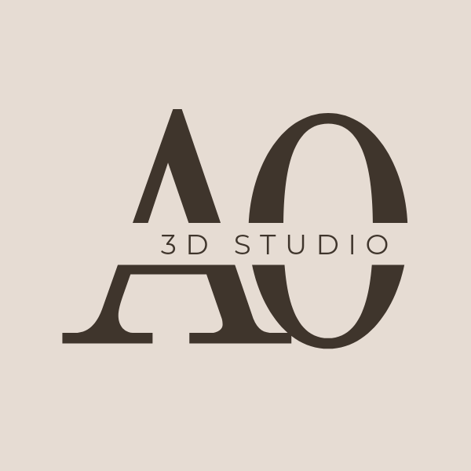
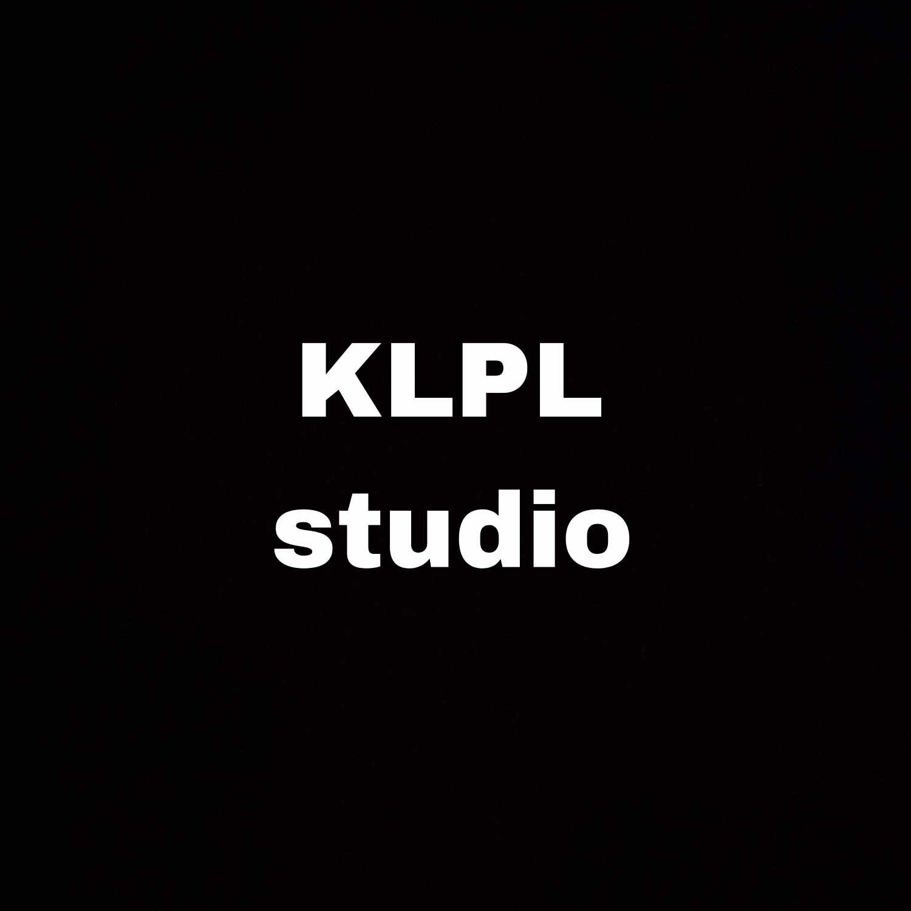

Alapítva 2021-ben.
Együttműködő partnereink:



rakoczitehetsegpont@gmail.com
Ha hajót akarsz építeni, ne dobold össze az embereket, hogy fát gyűjtsenek, és ne adj nekik feladatokat.
Inkább tanítsd meg nekik, hogyan vágyakozzanak a tenger mérhetetlen végtelensége iránt. Antoine de Saint-Exupéry